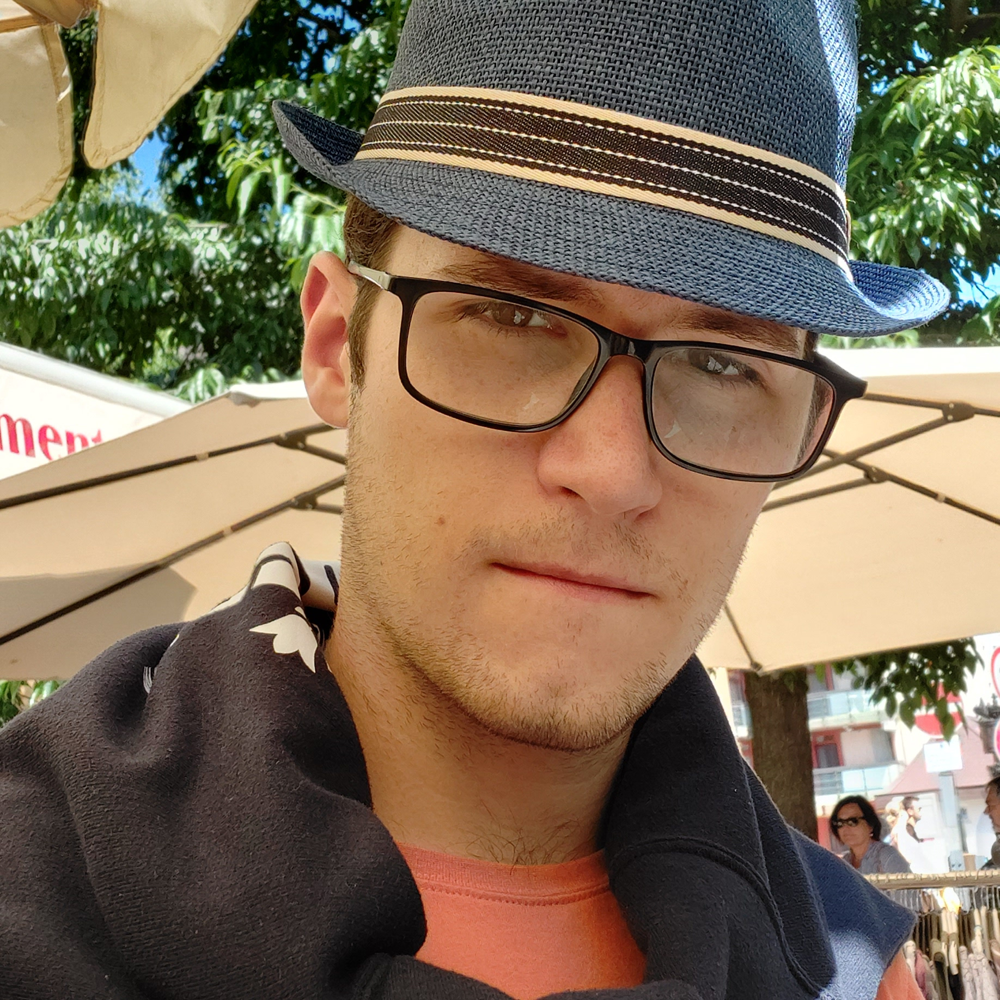

Halász Lui vagyok, elsőéves gépészmérnök hallgató a Budapesti Műszaki- és Gazdaságtudományi Egyetemen. Szakmai háttérrel még nem rendelkezem, ezért a "Munkáim" felületet a szabadidős tevékenységeimben készített műalkotásokkal töltöttem meg.
Rólam mindig elmondható, hogy ügyködöm valamin, áramkörök forrasztásától animációk és 3D modellek készítésén keresztül videójáték fejlesztésig minden foglalkoztat.

Szeretek rajzolni, modellezni, terveket készíteni és igyekszem folyamatos fejlődésben maradni mind módszertanilag, mind az alapanyagok minőségét illetően. Gépészeti tervezés és modellezés szakirányban szeretnék tovább tanulni.